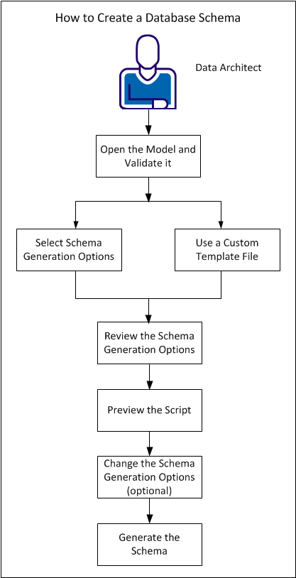

A schema is a text-based representation of the database objects that are created in a database from a script. As a Data architect, you generate a database schema from a physical model, using the Forward Engineer option. You can use the Forward Engineer option to create the database schema, regardless of how you created the physical model. You can generate the database schema for a specific subject area or for the main subject area.
For each target database, there is a default forward engineering template. The data modeling tool uses this default template to generate the schema. However, you can customize the default template and use it.
This tutorial describes how Data Architects create a database schema from an existing model. The process of generating the schema is explained with an example.
Consider the eMovies model, which addresses the following business requirements:
This example describes how to generate a schema for this model in SQL Server and include the following objects:
The following diagram illustrates how Data architects can generate a database schema:

Complete the following tasks: